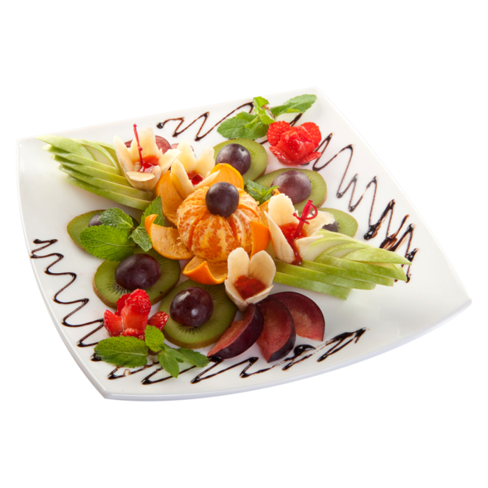

WHO ARE WE?
We're Maamoun Chebbi and Iheb Chaoued, two Tunisian foodies turned software wizards, currently studying
the delicious art of Software Engineering at ALX.When we're not cracking codes, you can find us whipping up
a storm in the kitchen, experimenting with flavors and concocting culinary masterpieces.
Picture this: you're craving something spectacular but have no idea what to cook.
Fear not, because FeedME is here to rescue you from mealtime monotony! With our app,
you'll uncover a treasure trove of recipes, from Tunisian tagines to global gastronomic delights.
Whether you're a seasoned chef or a kitchen klutz, we've got something to tantalize your taste buds and tickle your funny bone.
So, say goodbye to kitchen chaos and hello to culinary bliss with FeedME.
Let's spice up your meal planning routine and turn every day into a feast fit for a king (or queen)!